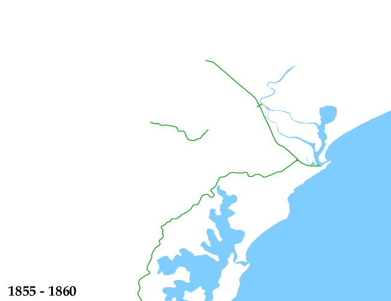

1860
1865
1870
1875
1880
1885
1890
1895
1900
1905
1910
1915
1920
1925
1930
1935
1940
1945
1950
1955
1960
1965
1970
1975
1980
1985
1990
1995
2000
2004
|
1860 1865 1870 1875 1880 1885 1890 1895 1900 1905 1910 1915 1920 1925 1930 1935 1940 1945 1950 1955 1960 1965 1970 1975 1980 1985 1990 1995 2000 2004 |
 |